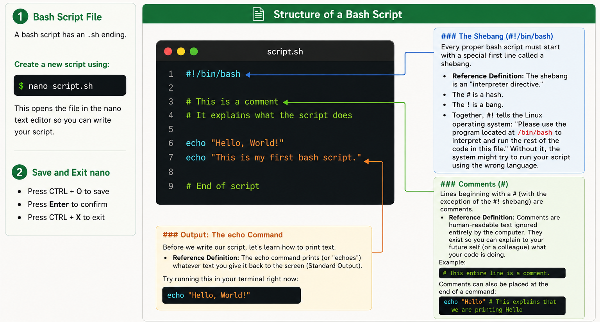

Bash Scripting & HPC Job Submission
Up until now, you have been typing commands directly into the terminal one by one. This is excellent for exploring data and learning the basics, but it is not sustainable for real bioinformatics workflows where analyses must be repeated across dozens or hundreds of samples.
Today, we will learn how to bundle our commands into reusable Bash scripts that execute automatically from start to finish. Then, we will explore how to take those scripts and submit them as jobs on a High-Performance Computing (HPC) cluster using Interactive sessions (srun / salloc) and the Slurm Workload Manager (sbatch).
Part 1: Fundamentals of Bash Scripting
What is a Bash Script?
A Bash script is simply a plain text file containing a sequence of Linux commands. * File Extension: By convention, Bash scripts end with the .sh file extension (for example, myscript.sh or pipeline.sh). While Linux does not strictly require file extensions, using .sh immediately signals to you and your collaborators that the file is a shell script. * Creating a Script: You can create and edit a script using any terminal text editor, such as nano: bash nano myscript.sh A script acts as an automated recipe. When executed, the computer reads the file line-by-line from top to bottom and runs each command in order, exactly as if you were typing them into the terminal yourself. This guarantees reproducibility which is a fundamental requirement in scientific research.
Anatomy & Structure of a Bash Script
Every well-written Bash script follows a clear structure composed of core components:

Writing and Running Your First Script
Let’s build your very first standalone script!
Open a new file called
first_script.shusingnano:nano first_script.shType the following lines into the file:
#!/bin/bash # ---description---- # This is a welcome script to practice script execution # Usage: bash first_script.sh echo "=========================================" echo "Welcome to the ABI Summer School 2026!" echo "This is my very first bash script." echo "========================================="Save and exit
nano(Ctrl+O,Enter,Ctrl+X).
How to Run a Bash Script
There are three different methods to execute your script:
Method 1: Passing the file to bash directly You can explicitly tell the bash program to read and execute your script:
bash first_script.shMethod 2: Passing the file to sh sh is an older standard shell interpreter. For basic commands, it behaves similarly:
sh first_script.shMethod 3: Executing the file directly In professional environments, we run scripts directly as standalone programs using ./ (which specifies “look in the current directory”):
./first_script.shWait! You will see an error: Permission denied!
Why did this happen? By default, Linux creates new text files with read and write permissions only. To prevent malicious or accidental execution, Linux requires you to explicitly grant executable permissions to any file you wish to run directly.
The chmod Command
chmodstands for “Change Mode”. It modifies file access permissions. The+xflag tells Linux to add executable rights to the file.
chmod +x first_script.shNow, try running Method 3 again:
./first_script.shIt works! When executed this way, the operating system inspects the #!/bin/bash shebang on line 1, loads the Bash interpreter, and executes your instructions.
Part 2: Running Computations on the HPC
HPC Cluster Architecture: Login Node vs. Compute Nodes
When you log into a High-Performance Computing (HPC) cluster, you land on a Login Node.
- The Login Node: A shared gateway server used by dozens of researchers at once. It is intended only for lightweight tasks: navigating directories, editing code with
nano, and submitting jobs. Never run computationally heavy analyses on the login node, as doing so will slow down or crash the server for all users. - The Compute Nodes: A massive fleet of high-powered servers (equipped with dozens of CPU cores and hundreds of gigabytes of RAM) where the actual computation takes place. Compute nodes cannot be accessed directly; tasks must be routed to them via a workload manager.
Three Ways to Execute Work on an HPC
There are three primary ways to run workloads on compute nodes:
┌─────────────────────────────────────────────────────────────────────────────────────────┐
│ HOW WORK RUNS ON AN HPC │
├───────────────────────────────┬───────────────────────────────┬─────────────────────────┤
│ 1. DIRECT INTERACTIVE │ 2. ALLOCATION SUBSHELL │ 3. BATCH JOBS │
│ (srun) │ (salloc) │ (sbatch) │
├───────────────────────────────┼───────────────────────────────┼─────────────────────────┤
│ • Connects directly to node │ • Reserves resources first │ • Runs in background │
│ • Live interactive shell │ • Subshell on login node │ • Fully automated │
│ • Good for testing & EDA │ • Good for multiple tasks │ • Good for heavy runs │
│ • Command: srun --pty bash │ • Command: salloc ... │ • Command: sbatch ... │
└───────────────────────────────┴───────────────────────────────┴─────────────────────────┘1. Interactive Jobs (srun)
An interactive job allocates dedicated resources on a compute node and immediately gives you a live command prompt on that node in real time. * When to use: Testing short commands, debugging scripts, or exploring data interactively. * Quick interactive session: bash srun --pty bash * Custom resource request (e.g. 1 CPU core, 2GB RAM for 30 minutes): bash srun --nodes=1 --ntasks=1 --cpus-per-task=1 --mem=2G --time=00:30:00 --pty bash (Notice how your prompt changes from user@login-node to user@compute-node! When finished, simply type exit to return to the login node).
2. Interactive Resource Allocation (salloc)
While srun immediately runs a command on a compute node, salloc is used to reserve and allocate resources first. It opens a subshell with those resources held for you.
When to use: When you need to hold a resource reservation for a work session and run several separate commands or
sruntasks within that same allocation.Example command (requesting 1 node, 2 CPUs, 4GB RAM for 1 hour):
salloc --nodes=1 --cpus-per-task=2 --mem=4G --time=01:00:00Once Slurm grants the allocation (
salloc: Granted job allocation ...), you can run tasks inside it usingsrun:srun hostnameReleasing resources: When finished, type
exitto terminate the allocation and release the resources back to the cluster:exit
3. Batch Jobs (sbatch)
A batch job is non-interactive. You write your instructions into a script, submit it to the scheduler, and disconnect. The cluster runs the script automatically in the background and saves all output to log files. * When to use: Long-running computations, bioinformatics pipelines, and heavy analyses.
What is Slurm?
- Slurm (Simple Linux Utility for Resource Management) is an open-source Job Scheduler and Workload Manager. It tracks cluster resources, manages user queues, and assigns batch jobs to available compute nodes.
Slurm #SBATCH Directives
To tell Slurm what computational resources your script requires, we place #SBATCH headers at the top of the file immediately below the shebang.
| Flag | Purpose | Example |
|---|---|---|
--job-name |
A descriptive name for the job in the queue | #SBATCH --job-name=my_job |
--output |
File where standard output is saved | #SBATCH --output=my_job.out |
--error |
File where error messages are saved | #SBATCH --error=my_job.err |
--time |
Maximum runtime limit (HH:MM:SS) |
#SBATCH --time=00:05:00 |
--mem |
Total RAM requested | #SBATCH --mem=1G |
--cpus-per-task |
Number of CPU cores requested | #SBATCH --cpus-per-task=1 |
Practical 2 — Submitting Your First Slurm Batch Job
Create a job submission script called
hello_slurm.sbatch:nano hello_slurm.sbatchType the following code:
#!/bin/bash #SBATCH --job-name=hello_slurm # Name of the job in the queue #SBATCH --output=hello_slurm.out # Standard output log file #SBATCH --error=hello_slurm.err # Standard error log file #SBATCH --time=00:05:00 # Maximum time requested (5 minutes) #SBATCH --mem=1G # Total RAM requested (1 GB) #SBATCH --cpus-per-task=1 # Number of CPU cores # --- Basic Commands --- echo "=========================================" echo "Hello from the HPC cluster!" echo "Current working directory:" pwd echo "Current date and time:" date echo "Compute node hostname:" hostname echo "=========================================" # Pause for 30 seconds so we can observe the job in the queue sleep 30 echo "Batch job completed successfully!"Save and exit
nano(Ctrl+O,Enter,Ctrl+X).
Submitting and Monitoring the Job
Submit the job to Slurm:
sbatch hello_slurm.sbatchSlurm will confirm with a job number, e.g.:
Submitted batch job 104523.Inspect the queue: Check the status of your running job (replace
<your_username>with your cluster username):squeue -u <your_username>ST(State):PD= Pending,R= Running,CG= Completing.
View the generated output log: Once the job finishes, check the generated output file:
cat hello_slurm.out
Practical 3: Diagnosing Broken Jobs & Using Error Logs
In bioinformatics, jobs frequently fail due to typos or missing files. Knowing how to read log files is essential.
Create a script with a deliberate typo:
nano broken_job.sbatchType the following code:
#!/bin/bash #SBATCH --job-name=broken_test #SBATCH --output=broken_test.out #SBATCH --error=broken_test.err #SBATCH --time=00:02:00 #SBATCH --mem=1G echo "Starting my analysis..." # This command will fail because the folder does not exist: ls /non_existent_directory/data/ echo "Analysis finished."Save, exit, and submit:
sbatch broken_job.sbatchCheck the error log:
cat broken_test.errYou will see the exact cause of failure:
ls: cannot access '/non_existent_directory/data/': No such file or directory.
Whenever a Slurm job fails or produces unexpected results, always inspect your .err file first (cat broken_test.err)!
Practical 4: Cancelling Active Jobs (scancel)
If you submit a job and realize you made a mistake, you can cancel it immediately to free up cluster resources:
Submit a job:
sbatch hello_slurm.sbatchFind the
JOBIDin the queue:squeue -u <your_username>Cancel the job:
scancel <YOUR_JOB_ID>
Part 3: Dynamic Scripting - Variables, User Input & Command Substitution
Static scripts that only print fixed messages are of limited use. To build flexible data-analysis pipelines, our scripts must store data in variables, accept dynamic user input, and capture command outputs. We will practice each technique step-by-step by creating dedicated scripts.
Step 1: Learning Variables
- What is a Variable? A named storage container in the computer’s memory. You store data (like sample IDs, organisms, or file paths) inside the variable and recall it anywhere in your script.
- Assign values using the equals sign
=. - CRITICAL: There must be NO SPACES around the equals sign!
- Correct:
SAMPLE="SAMPLE_001" - Incorrect:
SAMPLE = "SAMPLE_001"(Bash will mistakenly interpretSAMPLEas a command!)
- Correct:
- To retrieve or evaluate the data stored inside a variable, prefix its name with a dollar sign
$. Wrapping the name in curly braces${VAR}is standard best practice.
Practical:
Open a new script with
nano:nano variables_demo.shType the following code:
#!/bin/bash # ---description---- # Demonstrating variable assignment and retrieval # Usage: bash variables_demo.sh # 1. Define variables (NO SPACES around =) ORGANISM="Plasmodium falciparum" # 2. Print variables using $ and ${} echo "=========================================" echo "Target organism: ${ORGANISM}" echo "========================================="Save and exit
nano(Ctrl+O,Enter,Ctrl+X).Run the script:
bash variables_demo.sh
Step 2: Interactive User Input with read
Hard-coding sample names directly into your script means you have to edit the file every time you process a new sample. We can make scripts dynamic by asking the user for input at runtime.
- The
readcommand pauses script execution, waits for the user to type something on their keyboard, and stores whatever was typed directly into a variable. - The
-pFlag: Usingread -p "Prompt text: " VARIABLEdisplays an inline prompt message to the user before waiting for their response.
Practical:
Open a new script:
nano interactive_prompt.shType the following code:
#!/bin/bash # ---description---- # Capturing dynamic user input with read # Usage: bash interactive_prompt.sh # Prompt the user for input interactively read -p "Enter your sample ID (e.g. Pf_001): " SAMPLE_ID echo "----------------------------------------" echo "Configuring pipeline for sample: ${SAMPLE_ID}" echo "----------------------------------------"Save and exit
nano.Run the script and type in your sample details when prompted:
bash interactive_prompt.sh
Step 3: Command Substitution with $()
Often, you don’t want to store static text or wait for user typing; you want to automatically capture the live output of a Linux command (such as the current date, active directory, or a file line count).
- Wrapping a Linux command inside
$(...)executes that command first, captures its Standard Output, and substitutes that result into your variable.
Practical:
Open a new script:
nano command_sub.shType the following code:
#!/bin/bash # ---description---- # Demonstrating command substitution using $() # Usage: bash command_sub.sh # Capture dynamic system data using $() CURRENT_DATE=$(date) WORKING_DIR=$(pwd) echo "=========================================" echo "Report generated on: ${CURRENT_DATE}" echo "Executed from folder: ${WORKING_DIR}" echo "========================================="Save and exit
nano.Run the script:
bash command_sub.sh
Step 4: Putting It All Together — The Interactive System & Pipeline Reporter
Now let’s synthesize variables, read, and $() into a complete, standalone utility.
Open a new file called
system_info.sh:nano system_info.shType the following code:
#!/bin/bash # ---description---- # Complete interactive pipeline summary reporter # Usage: bash system_info.sh # 1. Prompt the user for their name and sample name read -p "Please enter your analyst name: " USER_NAME read -p "Please enter the file to process: " FILE_NAME # 2. Capture system outputs using command substitution TODAY=$(date) CURRENT_DIR=$(pwd) HOST=$(hostname) # 3. Display the formatted summary report echo "==================================================" echo "PIPELINE EXECUTION REPORT" echo "==================================================" echo "Analyst: ${USER_NAME}" echo "File Name: ${FILE_NAME}" echo "Running on Machine: ${HOST}" echo "Timestamp: ${TODAY}" echo "Working Directory: ${CURRENT_DIR}" echo "=================================================="Save and exit (
Ctrl+O,Enter,Ctrl+X).Run the script directly as a program:
bash system_info.sh
ABI Summer School 2026 · Week 1: Linux / HPC